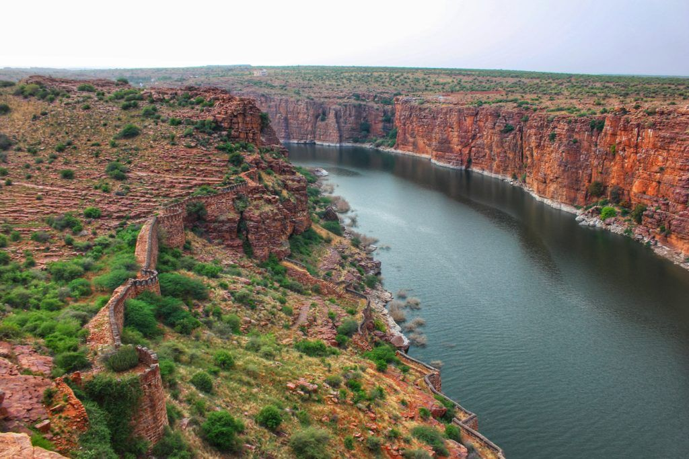

Gandikota is famously known as the "Grand Canyon of India" due to its dramatic gorge carved by the Pennar River. This hidden gem features a historic fort perched on the edge of the canyon, offering spectacular views.
The combination of geological wonder and historical significance makes Gandikota unique. The sunset views from the canyon edge are absolutely breathtaking, and the stargazing opportunities are exceptional.
- The Grand Canyon gorge - a deep ravine carved by the Pennar River
- Gandikota Fort - with ancient temples and mosques
- Belum Caves nearby - second largest cave system in India
- Camping on canyon edge
- Sunrise and sunset photography spots
October to March is ideal. Summers (April-June) can be extremely hot. The winter months offer pleasant weather for exploring the fort and camping.
Gandikota is about 270 km from Bangalore and 100 km from Kadapa. You can take a bus to Jammalamadugu and then a local bus or taxi to Gandikota. The nearest railway station is Jammalamadugu.